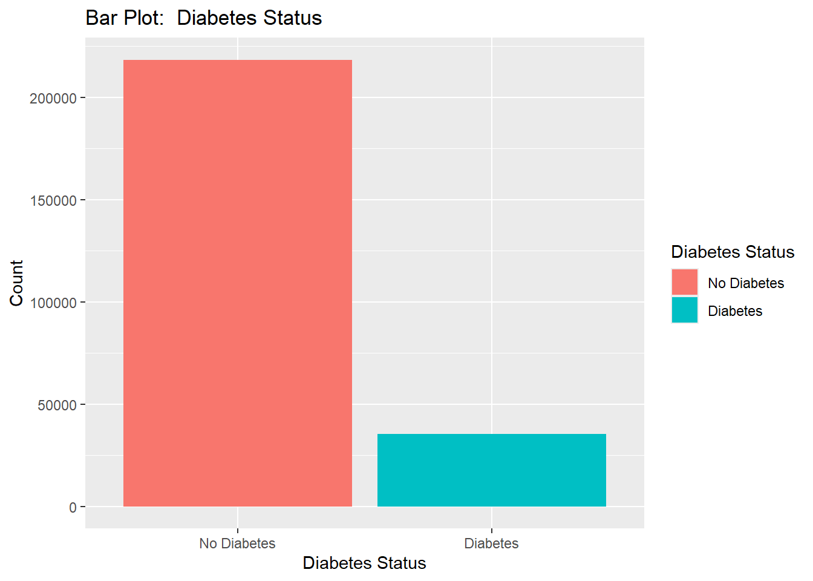
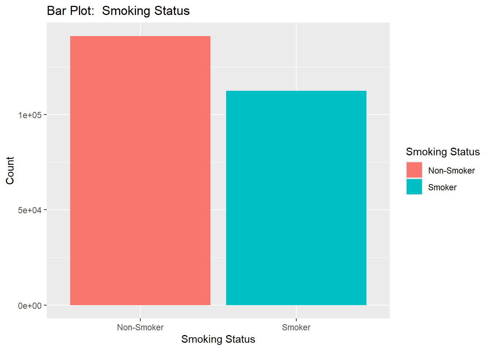
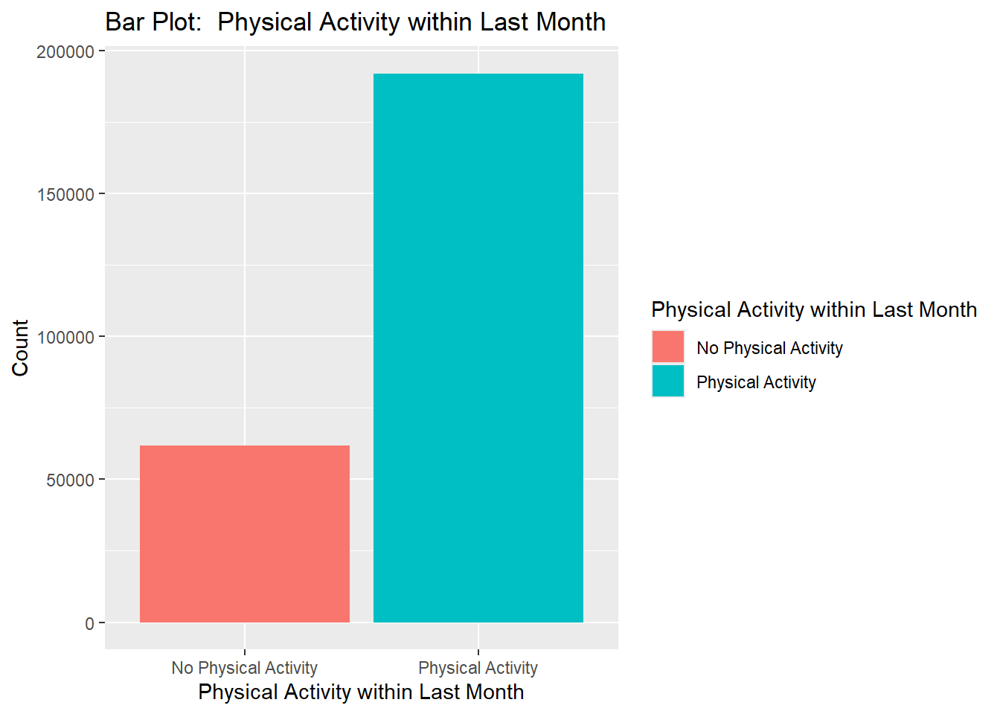
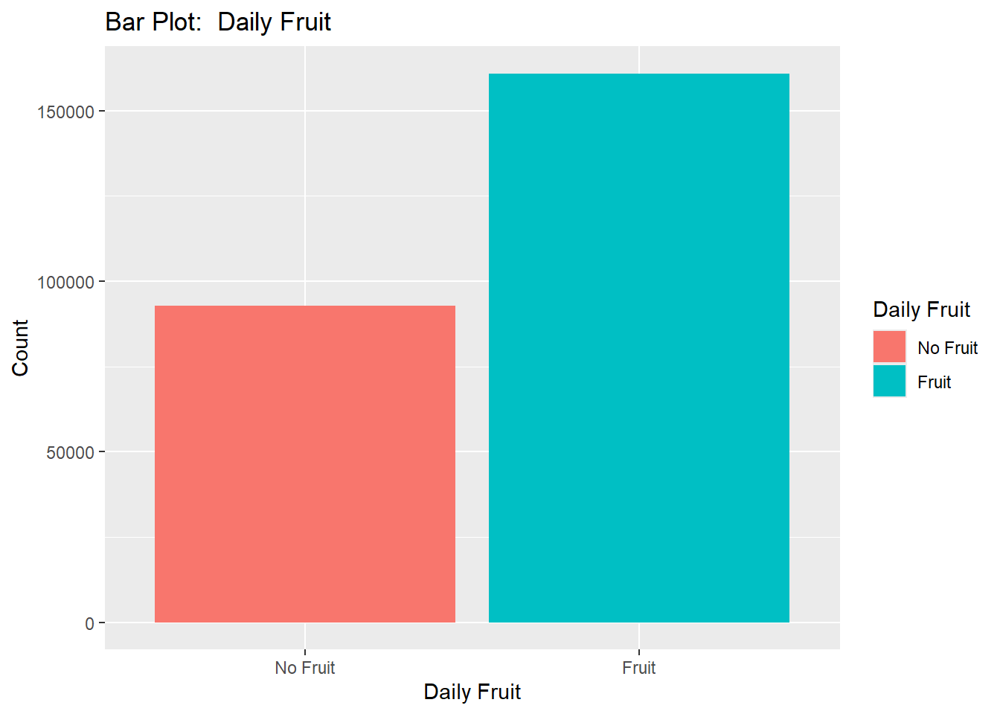
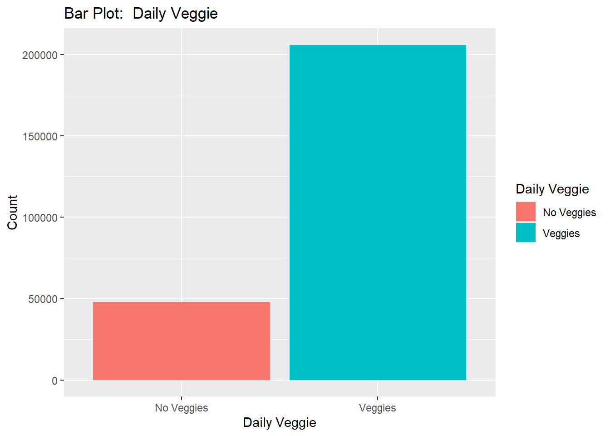
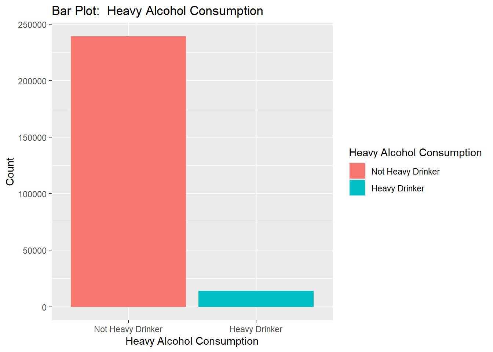
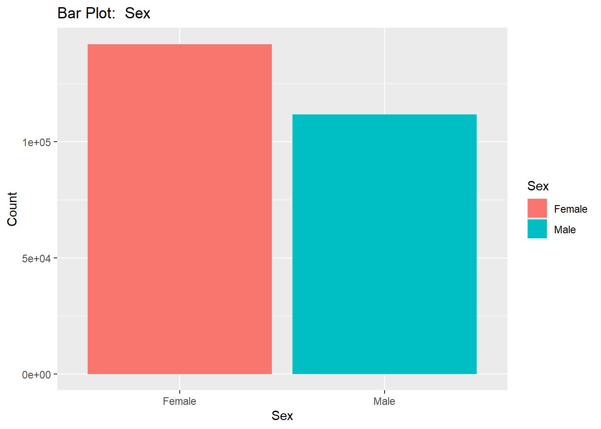
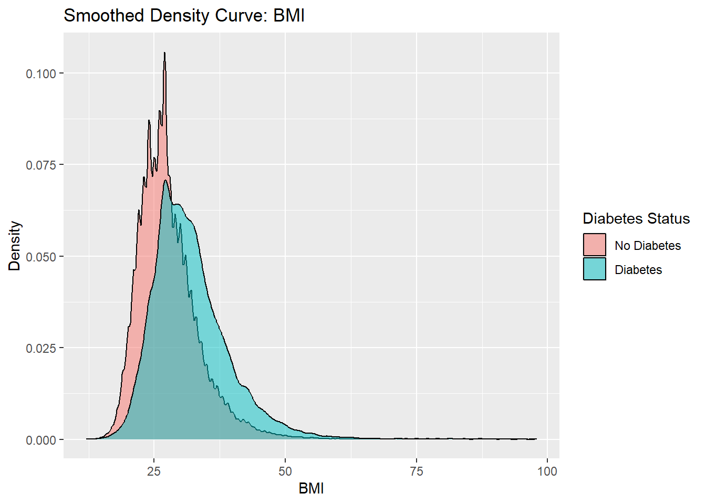
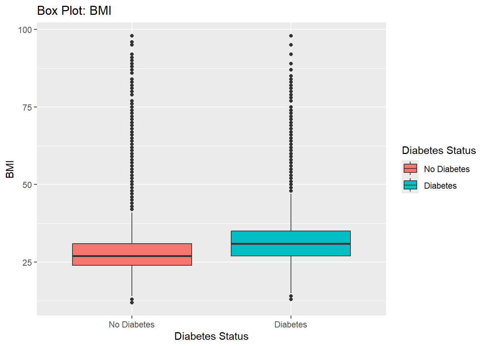

Exploratory Data Analysis: Diabetes Health Indicators
Author
Lanette Tyler
Introduction
Data: Diabetes Binary Health Indicators
The data used in this analysis is from the Diabetes Health Indicators Dataset available at kaggle. The specific data file used is diabetes_binary_health_indicators_BRFSS2015.csv. This file consists of a cleaned data set of 253,680 survey responses to the CDC’s Behavioral Risk Factor Surveillance System (RFSS) 2015. This analysis is focused on the lifestyle factors of smoking, drinking, physical activity, eating fruits and vegetables, as well as the basic body features of BMI, sex, and age, with the ultimate goal of building a model of these variables to predict diabetes status. These variables are described below:
Target Variable
Diabetes_binary (renamed dia_ind; labelled Diabetes Status): two classes indicating no diabetes or pre-diabetes/diabetes
Predictor Variables Considered
BMI (renamed bmi; labelled BMI): Body Mass Index (continuous variable)
Smoker (renamed smoker; labelled Smoker): two classes indicating whether the subject had smoked at least 100 cigarettes (5 packs) in their lifetime
PhysActivity (renamed phys_act; labelled Physical Activity within Last Month): two classes indicating if subject had engaged in physical activity outside of work in the previous 30 days or not
Fruits (renamed fruits; labelled Daily Fruit): two classes indicating if subject had consumed fruit one or more times per day or not
Veggies (renamed fruits; labelled Daily Veggie): two classes indicating if subject had consumed veggies one or more times per day or not
HvyAlcoholConsump (renamed alcohol; labelled Heavy Alcohol Consumption): two classes indicating if men had consumed more than 14 drinks per week and women more than 7 or not
Sex (renamed sex; labelled Sex): two classes indicating male or female
Age (renamed age; labelled Age): thirteen classes indicating age range (Ages 18 to 24, Ages 25 to 29, Ages 30 to 34, Ages 35 to 39, Ages 40 to 44, Ages 45 to 49, Ages 50 to 54, Ages 55 to 59, Ages 60 to 64, Ages 65 to 69, Ages 70 to 74, Ages 75 to 79, Ages 80 or older)
The purpose of this exploratory data analysis is to see data summaries and visualizations of the variables under consideration to begin to understand the relationship between these predictors and the target variable of diabetes status. The ultimate goal of the entire project is to fit predictive models to the variables, choose a best fit model, and then house that model in an API within a docker container.
Preliminary Tasks
Load packages, read in data, and change variable names.
Load packages:
library(tidyverse)
── Attaching core tidyverse packages ──────────────────────── tidyverse 2.0.0 ──
✔ dplyr 1.1.4 ✔ readr 2.1.5
✔ forcats 1.0.0 ✔ stringr 1.5.1
✔ ggplot2 4.0.1 ✔ tibble 3.3.0
✔ lubridate 1.9.4 ✔ tidyr 1.3.1
✔ purrr 1.0.4
── Conflicts ────────────────────────────────────────── tidyverse_conflicts() ──
✖ dplyr::filter() masks stats::filter()
✖ dplyr::lag() masks stats::lag()
ℹ Use the conflicted package (<http://conflicted.r-lib.org/>) to force all conflicts to become errors
Rows: 253680 Columns: 22
── Column specification ────────────────────────────────────────────────────────
Delimiter: ","
dbl (22): Diabetes_binary, HighBP, HighChol, CholCheck, BMI, Smoker, Stroke,...
ℹ Use `spec()` to retrieve the full column specification for this data.
ℹ Specify the column types or set `show_col_types = FALSE` to quiet this message.
All columns in the data set are numeric, but most should be categorical.
Change data columns to factor type as appropriate:
d_data <- d_data |>mutate(dia_ind =factor(dia_ind, levels =c(0, 1), labels =c("No Diabetes", "Diabetes")), bp =factor(bp, levels =c(0, 1), labels =c("No High BP", "High BP")), chol =factor(chol, levels =c(0, 1), labels =c("No High Cholesterol", "High Cholesterol")), chol_ch5 =factor(chol_ch5, levels =c(0, 1),labels =c("No 5yr Cholesterol Check", "5yr Cholesterol Check")),smoker =factor(smoker, levels =c(0, 1),labels =c("Non-Smoker", "Smoker")),stroke =factor(stroke, levels =c(0, 1),labels =c("No Stroke", "Stroke")), hrt_dis_atk =factor(hrt_dis_atk, levels =c(0, 1),labels =c("No Heart Disease/Attack", "Heart Disease/Attack")),phys_act =factor(phys_act, levels =c(0, 1),labels =c("No Physical Activity", "Physical Activity")), fruits =factor(fruits, levels =c(0, 1),labels =c("No Fruit", "Fruit")), veggies =factor(veggies, levels =c(0, 1),labels =c("No Veggies", "Veggies")), alcohol =factor(alcohol, levels =c(0, 1),labels =c("Not Heavy Drinker", "Heavy Drinker")), h_care =factor(h_care, levels =c(0, 1),labels =c("No Healthcare Coverage", "Healthcare Coverage")), no_doc =factor(no_doc, levels =c(0, 1),labels =c("No Missed Visit Due to Money", "Missed Visit Due to Money")), gen_health =factor(gen_health, levels =c(1, 2, 3, 4, 5),labels =c("Excellent General", "Very Good General Health", "Good General Health", "Fair General Health", "Poor General Health")),m_health =factor(m_health, levels =c(0:30),labels =c(0:30)),ph_health =factor(ph_health, levels =c(0:30),labels =c(0:30)),walk_diff =factor(walk_diff, levels =c(0, 1),labels =c("No Difficulty Walking", "Difficulty Walking")),sex =factor(sex, levels =c(0, 1),labels =c("Female", "Male")),age =factor(age, levels =c(1:13),labels =c("Ages 18 to 24", "Ages 25 to 29", "Ages 30 to 34", "Ages 35 to 39","Ages 40 to 44", "Ages 45 to 49", "Ages 50 to 54", "Ages 55 to 59","Ages 60 to 64","Ages 65 to 69","Ages 70 to 74","Ages 75 to 79","Ages 80 or older")), edu =factor(edu, levels =c(1:6),labels =c("Kindergarten or Less", "Grades 1 to 8", "Some High School", "High School Graduate", "Some College or Technical School", "College Graduate")),income =factor(income, levels =c(1:8),labels =c("Less than $10,000","$10,000 to less than $15,000","$15,000 to less than $20,000","$20,000 to less than $25,000","$25,000 to less than $35,000", "$35,000 to less than $50,000","$50,000 to less than $75,000","$75,000 or more")))head(d_data) #take a look
# A tibble: 6 × 22
dia_ind bp chol chol_ch5 bmi smoker stroke hrt_dis_atk phys_act fruits
<fct> <fct> <fct> <fct> <dbl> <fct> <fct> <fct> <fct> <fct>
1 No Diabe… High… High… 5yr Cho… 40 Smoker No St… No Heart D… No Phys… No Fr…
2 No Diabe… No H… No H… No 5yr … 25 Smoker No St… No Heart D… Physica… No Fr…
3 No Diabe… High… High… 5yr Cho… 28 Non-S… No St… No Heart D… No Phys… Fruit
4 No Diabe… High… No H… 5yr Cho… 27 Non-S… No St… No Heart D… Physica… Fruit
5 No Diabe… High… High… 5yr Cho… 24 Non-S… No St… No Heart D… Physica… Fruit
6 No Diabe… High… High… 5yr Cho… 25 Smoker No St… No Heart D… Physica… Fruit
# ℹ 12 more variables: veggies <fct>, alcohol <fct>, h_care <fct>,
# no_doc <fct>, gen_health <fct>, m_health <fct>, ph_health <fct>,
# walk_diff <fct>, sex <fct>, age <fct>, edu <fct>, income <fct>
All data columns are changed to factor type except for BMI which is left as numeric.
Look at data summary to check for reasonable values:
summary(d_data)
dia_ind bp chol
No Diabetes:218334 No High BP:144851 No High Cholesterol:146089
Diabetes : 35346 High BP :108829 High Cholesterol :107591
chol_ch5 bmi smoker
No 5yr Cholesterol Check: 9470 Min. :12.00 Non-Smoker:141257
5yr Cholesterol Check :244210 1st Qu.:24.00 Smoker :112423
Median :27.00
Mean :28.38
3rd Qu.:31.00
Max. :98.00
stroke hrt_dis_atk
No Stroke:243388 No Heart Disease/Attack:229787
Stroke : 10292 Heart Disease/Attack : 23893
phys_act fruits veggies
No Physical Activity: 61760 No Fruit: 92782 No Veggies: 47839
Physical Activity :191920 Fruit :160898 Veggies :205841
alcohol h_care
Not Heavy Drinker:239424 No Healthcare Coverage: 12417
Heavy Drinker : 14256 Healthcare Coverage :241263
no_doc gen_health
No Missed Visit Due to Money:232326 Excellent General :45299
Missed Visit Due to Money : 21354 Very Good General Health:89084
Good General Health :75646
Fair General Health :31570
Poor General Health :12081
m_health ph_health walk_diff
0 :175680 0 :160052 No Difficulty Walking:211005
2 : 13054 30 : 19400 Difficulty Walking : 42675
30 : 12088 2 : 14764
5 : 9030 1 : 11388
1 : 8538 3 : 8495
3 : 7381 5 : 7622
(Other): 27909 (Other): 31959
sex age
Female:141974 Ages 60 to 64:33244
Male :111706 Ages 65 to 69:32194
Ages 55 to 59:30832
Ages 50 to 54:26314
Ages 70 to 74:23533
Ages 45 to 49:19819
(Other) :87744
edu income
Kindergarten or Less : 174 $75,000 or more :90385
Grades 1 to 8 : 4043 $50,000 to less than $75,000:43219
Some High School : 9478 $35,000 to less than $50,000:36470
High School Graduate : 62750 $25,000 to less than $35,000:25883
Some College or Technical School: 69910 $20,000 to less than $25,000:20135
College Graduate :107325 $15,000 to less than $20,000:15994
(Other) :21594
Everything looks reasonable.
Add labels for when nicer names are desired:
var_label(d_data) <-c("Diabetes Status", "Blood Pressure","Cholesterol","Cholesterol Check within 5 Years", "BMI","Smoking Status", "Stroke Status", "Heart Disease or Attack History", "Physical Activity within Last Month", "Daily Fruit", "Daily Veggie", "Heavy Alcohol Consumption", "Healthcare Coverage Status", "Skipped Needed Doctor Visit Due to Cost in Last Year", "Self-Perception of General Health", "Self-Perception of Mental Health", "Self-Perception of Physical Health", "Serious Difficulty Walking or Climbing Stairs", "Sex", "Age", "Education", "Income") var_label(d_data) #take a look at the labels
$dia_ind
[1] "Diabetes Status"
$bp
[1] "Blood Pressure"
$chol
[1] "Cholesterol"
$chol_ch5
[1] "Cholesterol Check within 5 Years"
$bmi
[1] "BMI"
$smoker
[1] "Smoking Status"
$stroke
[1] "Stroke Status"
$hrt_dis_atk
[1] "Heart Disease or Attack History"
$phys_act
[1] "Physical Activity within Last Month"
$fruits
[1] "Daily Fruit"
$veggies
[1] "Daily Veggie"
$alcohol
[1] "Heavy Alcohol Consumption"
$h_care
[1] "Healthcare Coverage Status"
$no_doc
[1] "Skipped Needed Doctor Visit Due to Cost in Last Year"
$gen_health
[1] "Self-Perception of General Health"
$m_health
[1] "Self-Perception of Mental Health"
$ph_health
[1] "Self-Perception of Physical Health"
$walk_diff
[1] "Serious Difficulty Walking or Climbing Stairs"
$sex
[1] "Sex"
$age
[1] "Age"
$edu
[1] "Education"
$income
[1] "Income"
Exploratory Data Analysis (EDA)
This exploratory data analysis focuses on variables related to lifestyle and health history.
Numeric Summaries
One-Way Contingency Tables of Categorical Variables of Interest, as Proportions:
proportions(table(d_data$dia_ind))
No Diabetes Diabetes
0.860667 0.139333
proportions(table(d_data$smoker))
Non-Smoker Smoker
0.5568314 0.4431686
proportions(table(d_data$phys_act))
No Physical Activity Physical Activity
0.2434563 0.7565437
proportions(table(d_data$fruits))
No Fruit Fruit
0.3657442 0.6342558
proportions(table(d_data$veggies))
No Veggies Veggies
0.1885801 0.8114199
proportions(table(d_data$alcohol))
Not Heavy Drinker Heavy Drinker
0.94380322 0.05619678
proportions(table(d_data$sex))
Female Male
0.5596578 0.4403422
proportions(table(d_data$age))
Ages 18 to 24 Ages 25 to 29 Ages 30 to 34 Ages 35 to 39
0.02246925 0.02995112 0.04384658 0.05448991
Ages 40 to 44 Ages 45 to 49 Ages 50 to 54 Ages 55 to 59
0.06369048 0.07812599 0.10372911 0.12153895
Ages 60 to 64 Ages 65 to 69 Ages 70 to 74 Ages 75 to 79
0.13104699 0.12690792 0.09276648 0.06299275
Ages 80 or older
0.06844450
Most respondents did not have diabetes (86%). A surprisingly high percentage smoked (44%). Most ate veggies (81%) and fruit (63%) at least once a day. Very few were heavy drinkers (6%). A bit over a half were female (56%).
Two-Way Contingency Tables of Categorical Variables of Interest, as Proportions, Grouped by Diabetes Status:
proportions(table(d_data$dia_ind, d_data$smoker))
Non-Smoker Smoker
No Diabetes 0.48970356 0.37096342
Diabetes 0.06712788 0.07220514
Not Heavy Drinker Heavy Drinker
No Diabetes 0.807749921 0.052917061
Diabetes 0.136053295 0.003279722
proportions(table(d_data$dia_ind, d_data$sex))
Female Male
No Diabetes 0.48708215 0.37358483
Diabetes 0.07257569 0.06675733
proportions(table(d_data$dia_ind, d_data$age))
Ages 18 to 24 Ages 25 to 29 Ages 30 to 34 Ages 35 to 39
No Diabetes 0.0221617786 0.0293992431 0.0426087985 0.0520222327
Diabetes 0.0003074740 0.0005518764 0.0012377799 0.0024676758
Ages 40 to 44 Ages 45 to 49 Ages 50 to 54 Ages 55 to 59
No Diabetes 0.0595474614 0.0712590665 0.0915562914 0.1047343109
Diabetes 0.0041430148 0.0068669190 0.0121728161 0.0168046358
Ages 60 to 64 Ages 65 to 69 Ages 70 to 74 Ages 75 to 79
No Diabetes 0.1084476506 0.1010564491 0.0725007884 0.0495782088
Diabetes 0.0225993377 0.0258514664 0.0202656891 0.0134145380
Ages 80 or older
No Diabetes 0.0557947020
Diabetes 0.0126497950
Slightly higher proportions of smokers compared to non-smokers, non-physically active compared to physically active, non-fruit eaters compared to fruit eaters, non-veggie eaters compared to veggie eaters, and males compared to females had diabetes. These were not big differences. Proportion of diabetes was higher at higher ages. Counterintuitively, the heavy drinkers had a slightly lower proportion of diabetes than non-heavy drinkers.
The mean and median BMI were both about four points higher for those with diabetes, but this was within the standard deviation.
Graphical Data Summaries
Bar Plots of Single Numeric Variables:
ggplot(data = d_data, aes(x = dia_ind, fill = dia_ind)) +geom_bar() +labs(y ="Count", title =paste("Bar Plot: ", var_label(d_data$dia_ind)))

ggplot(data = d_data, aes(x = smoker, fill = smoker)) +geom_bar() +labs(y ="Count", title =paste("Bar Plot: ", var_label(d_data$smoker)))

ggplot(data = d_data, aes(x = phys_act, fill = phys_act)) +geom_bar() +labs(y ="Count", title =paste("Bar Plot: ", var_label(d_data$phys_act)))

ggplot(data = d_data, aes(x = fruits, fill = fruits)) +geom_bar() +labs(y ="Count", title =paste("Bar Plot: ", var_label(d_data$fruits)))

ggplot(data = d_data, aes(x = veggies, fill = veggies)) +geom_bar() +labs(y ="Count", title =paste("Bar Plot: ", var_label(d_data$veggies)))

ggplot(data = d_data, aes(x = alcohol, fill = alcohol)) +geom_bar() +labs(y ="Count", title =paste("Bar Plot: ", var_label(d_data$alcohol)))

ggplot(data = d_data, aes(x = sex, fill = sex)) +geom_bar() +labs(y ="Count", title =paste("Bar Plot: ", var_label(d_data$sex)))

ggplot(data = d_data, aes(x = age, fill = age)) +geom_bar() +labs(y ="Count", title =paste("Bar Plot: ", var_label(d_data$age))) +theme(axis.text.x=element_blank(), axis.ticks.x=element_blank())
As was seen in the one-way contingency tables, most respondents did not have diabetes. A surprisingly high number had smoked over 100 cigarettes. Most ate veggies and fruit at least once a day, but more ate veggies than ate fruit. Very few were heavy drinkers. A bit over half were female (56%).
Bar Plots of Numeric Variables Grouped by Diabetes Status:
The side-by-side bar plots show slightly higher proportions of diabetes for smokers compared to non-smokers, non-physically active compared to physically active, non-fruit eaters compared to fruit eaters, non-veggie eaters compared to veggie eaters, and male compared to female.
A greater proportion of women seem to practice healthier lifestyle factors, perhaps contributing to slightly higher diabetes among men in the data set.
Box Plot and Smoothed Density Curve of Numeric Variable BMI:
ggplot(data = d_data, aes(x = bmi)) +geom_density() +labs(y ="Density", title ="Smoothed Density Curve: BMI")
There are a lot of high-BMI outliers visible in the box plot.
Box Plots and Smoothed Density Curves of BMI Grouped by Diabetes Status
ggplot(data = d_data, aes(x = bmi, fill = dia_ind)) +geom_density(alpha =0.5) +labs(y ="Density", title ="Smoothed Density Curve: BMI")

ggplot(data = d_data, aes(y = bmi, x = dia_ind, fill = dia_ind)) +geom_boxplot() +labs(y ="BMI", title ="Box Plot: BMI")

There are a lot of high_BMI outliers visible in both the diabetes and non-diabetes box plots. The box plots and smoothed density curves mostly overlap, but the diabetes group is slightly higher.
EDA Conclusion
From the data summaries and visualizations of this data set, healthy lifestyle factors seem to correspond to slightly lower rates of diabetes and pre-diabetes, with the exception of heavy alcohol consumption. Men seemed to have slightly higher rates of diabetes and pre-diabetes than women, perhaps caused by their lower engagement in healthy lifestyle choices.